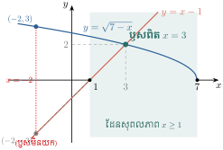
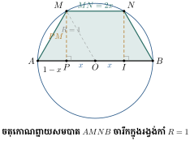
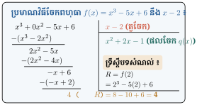
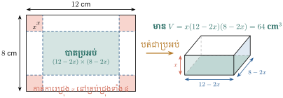

- ដោះស្រាយសមីការអសនិទានដោយស្គាល់ទម្រង់នៃសមីការ
- ដោះស្រាយសមីការដឺក្រេទី 3 និងសមីការដឺក្រេទី 4 ងាយៗតាមការដាក់ជាផលគុណកត្តា
- ស្រាយបញ្ជាក់ទ្រឹស្តីបទសំណល់ និងទ្រឹស្តីបទកត្តា
- រកសំណល់ និងកត្តានៃវិធីចែកពហុធា
- ប្រើទ្រឹស្តីបទកត្តា ដើម្បីដោះស្រាយសមីការដឺក្រេខ្ពស់
- អនុវត្តសមីការដឺក្រេលំដាប់ខ្ពស់ក្នុងចំណោទជីវភាពជាក់ស្តែង ។
1. សមីការអសនិទាន
ឧទាហរណ៍ ៖ សមីការ \(\displaystyle \sqrt{3x-2} = 6\) ជាសមីការអសនិទាន ។ ចំណែកឯសមីការ \(\displaystyle 3x + \sqrt{3} = 4\) មិនមែនជាសមីការអសនិទានទេ ព្រោះអញ្ញាត \(\displaystyle x\) មិនស្ថិតនៅក្រោមរ៉ាឌីកាល់ឡើយ ។
និយមន័យ ៖ សមីការអសនិទាន គឺជាសមីការដែលមានអញ្ញាតស្ថិតនៅក្រោមរ៉ាឌីកាល់មួយ ឬច្រើន ។
1.1 សមីការអសនិទានដែលមានរាង \(\displaystyle \sqrt{f(x)} = a\) (\(\displaystyle a \ge 0\))
ជាទូទៅ ៖ ដើម្បីដោះស្រាយសមីការអសនិទានរាង \(\displaystyle \sqrt{f(x)} = a\) (\(\displaystyle a \ge 0\)) គេត្រូវ ៖
- ដាក់លក្ខខណ្ឌឱ្យកន្សោមក្រោមរ៉ាឌីកាល់មិនអវិជ្ជមាន ៖ \(\displaystyle f(x) \ge 0\)
- លើកអង្គទាំងពីរជាការេដើម្បីបំបាត់រ៉ាឌីកាល់ ៖ \(\displaystyle f(x) = a^2\)
- ដោះស្រាយសមីការដែលគ្មានរ៉ាឌីកាល់
- យកតែឫសណាដែលផ្ទៀងផ្ទាត់លក្ខខណ្ឌ ។
សម្គាល់ ៖ បើ \(\displaystyle a < 0\) នោះសមីការ \(\displaystyle \sqrt{f(x)} = a\) គ្មានឫសក្នុងសំណុំចំនួនពិតទេ ។
ដោះស្រាយសមីការអសនិទាន \(\displaystyle \sqrt{x-2} = 3\) ៖
ដំណោះស្រាយ ៖
- លក្ខខណ្ឌ ៖ \(\displaystyle x - 2 \ge 0 \implies x \ge 2\)
- លើកអង្គទាំងពីរជាការេ ៖ \(\displaystyle (\sqrt{x-2})^2 = 3^2 \iff x - 2 = 9 \implies x = 11\)
- ដោយ \(\displaystyle 11 \ge 2\) (ផ្ទៀងផ្ទាត់)
ដូច្នេះ សមីការមានឫស \(\displaystyle x = 11\) ។
ដោះស្រាយសមីការអសនិទាន \(\displaystyle \sqrt{-3x+2} = 2\) ៖
ដំណោះស្រាយ ៖
- លក្ខខណ្ឌ ៖ \(\displaystyle -3x + 2 \ge 0 \implies x \le \dfrac{2}{3}\)
- លើកអង្គទាំងពីរជាការេ ៖ \(\displaystyle -3x + 2 = 4 \implies -3x = 2 \implies x = -\dfrac{2}{3}\)
- ដោយ \(\displaystyle -\dfrac{2}{3} \le \dfrac{2}{3}\) (ផ្ទៀងផ្ទាត់)
ដូច្នេះ សមីការមានឫស \(\displaystyle x = -\dfrac{2}{3}\) ។
ដោះស្រាយសមីការខាងក្រោម ៖
- ក. \(\displaystyle \sqrt{3x-2} = 5\)
- ខ. \(\displaystyle \sqrt{x-4} = -4\)
ចម្លើយ ៖
- ក. លក្ខខណ្ឌ \(\displaystyle x \ge \dfrac{2}{3}\) លើកជាការេ \(\displaystyle 3x - 2 = 25 \implies 3x = 27 \implies x = 9\)
- ខ. សមីការគ្មានឫសក្នុងសំណុំចំនួនពិត ព្រោះរ៉ាឌីកាល់ការេមិនអាចស្មើនឹងចំនួនអវិជ្ជមាន \(\displaystyle -4\) ឡើយ ។
1.2 សមីការអសនិទានដែលមានទម្រង់ \(\displaystyle \sqrt{f(x)} = g(x)\)
ជាទូទៅ ៖ ដើម្បីដោះស្រាយសមីការអសនិទានរាង \(\displaystyle \sqrt{f(x)} = g(x)\) គេត្រូវ ៖
- ដាក់លក្ខខណ្ឌ \(\displaystyle g(x) \ge 0\) (អង្គខាងស្តាំត្រូវមិនអវិជ្ជមាន)
- លើកអង្គទាំងពីរជាការេ ៖ \(\displaystyle f(x) = [g(x)]^2\) រួចដោះស្រាយសមីការ
- ផ្ទៀងផ្ទាត់ឫសដែលរកបានជាមួយលក្ខខណ្ឌ \(\displaystyle g(x) \ge 0\) ។
ដោះស្រាយសមីការ \(\displaystyle \sqrt{7-x} = x-1\) ៖
ដំណោះស្រាយ ៖
- លក្ខខណ្ឌ ៖ \(\displaystyle x - 1 \ge 0 \iff x \ge 1\)
លើកអង្គទាំងពីរជាការេ ៖
\[\begin{aligned} (\sqrt{7-x})^2 &= (x-1)^2 \\ 7 - x &= x^2 - 2x + 1 \\ x^2 - x - 6 &= 0 \\ (x - 3)(x + 2) &= 0 \implies x = 3 \quad \text{ឬ} \quad x = -2 \end{aligned}\]- ផ្ទៀងផ្ទាត់ ៖ ចំពោះ \(\displaystyle x = 3 \ge 1\) (យក); ចំពោះ \(\displaystyle x = -2 < 1\) (មិនយក)
ដូច្នេះ សមីការមានឫសតែមួយគត់គឺ \(\displaystyle x = 3\) ។

លំហាត់គំរូ 2 (ដោះស្រាយដោយប្រើអថេរជំនួយ) ដោះស្រាយសមីការ ៖
ដំណោះស្រាយ ៖
- លក្ខខណ្ឌ ៖ \(\displaystyle 10 - 2x > 0 \iff x < 5\)
តាង \(\displaystyle t = \sqrt{10-2x}\) (\(\displaystyle t > 0\)) នោះសមីការក្លាយជា ៖
\[\frac{8}{t} - t = 7 \iff 8 - t^2 = 7t \iff t^2 + 7t - 8 = 0\]សមីការមានរាង \(\displaystyle a + b + c = 1 + 7 - 8 = 0\) នាំឱ្យ ៖
\[t_1 = 1, \quad t_2 = \frac{c}{a} = -8 \quad (\text{មិនយក ព្រោះ } t > 0)\]- ចំពោះ \(\displaystyle t = 1\) គេបាន \(\displaystyle \sqrt{10-2x} = 1 \iff 10 - 2x = 1 \implies 2x = 9 \implies x = \dfrac{9}{2} < 5\)
ដូច្នេះ សមីការមានឫស \(\displaystyle x = \dfrac{9}{2}\) ។
ដោះស្រាយសមីការអសនិទាន ៖
- ក. \(\displaystyle 2\sqrt{x+1} = 3\sqrt{12-x}\)
- ខ. \(\displaystyle \sqrt{2x-7} = x-3\)
- គ. \(\displaystyle \sqrt{2x-1} = 2x-1\)
ចម្លើយ ៖
- ក. លក្ខខណ្ឌ \(\displaystyle -1 \le x \le 12\) លើកជាការេ \(\displaystyle 4(x+1) = 9(12-x) \iff 4x + 4 = 108 - 9x \iff 13x = 104 \implies x = 8\)
- ខ. លក្ខខណ្ឌ \(\displaystyle x \ge 3\) លើកជាការេ \(\displaystyle 2x - 7 = x^2 - 6x + 9 \iff x^2 - 8x + 16 = 0 \iff (x-4)^2 = 0 \implies x = 4\)
- គ. លក្ខខណ្ឌ \(\displaystyle x \ge \dfrac{1}{2}\) តាង \(\displaystyle t = \sqrt{2x-1} \ge 0 \implies t = t^2 \iff t(t-1) = 0 \implies t = 0\) ឬ \(\displaystyle t = 1\) នាំឱ្យ \(\displaystyle x = \dfrac{1}{2}\) ឬ \(\displaystyle x = 1\) ។
1.3 ការអនុវត្តសមីការអសនិទានក្នុងធរណីមាត្រ
ឧទាហរណ៍ ៖ រង្វង់ \(\displaystyle C\) មួយមាន \(\displaystyle AB\) ជាអង្កត់ផ្ចិត និងមានកាំស្មើ \(\displaystyle 1\text{ cm}\) (\(\displaystyle AB = 2\text{ cm}\)) ។ \(\displaystyle P\) ជាចំណុចមួយនៃអង្កត់ \(\displaystyle OA\) ។ ពីចំណុច \(\displaystyle P\) គេគូសបន្ទាត់កែងនឹង \(\displaystyle AB\) កាត់រង្វង់ \(\displaystyle C\) ត្រង់ \(\displaystyle M\) ។ បន្ទាត់មួយស្របនឹង \(\displaystyle AB\) គូសចេញពី \(\displaystyle M\) កាត់រង្វង់ \(\displaystyle C\) ត្រង់ \(\displaystyle N\) ។ ចូរកំណត់ទីតាំងនៃ \(\displaystyle P\) ដើម្បីឱ្យបរិមាត្រនៃចតុកោណព្នាយ \(\displaystyle AMNB\) ស្មើនឹង \(\displaystyle 5\text{ cm}\) ។

ដំណោះស្រាយ ៖
- តាង \(\displaystyle OP = x\) (\(\displaystyle 0 < x < 1\)) នាំឱ្យ \(\displaystyle AP = OA - OP = 1 - x\)
- ក្នុងត្រីកោណកែង \(\displaystyle OPM\) ៖ \(\displaystyle PM^2 = OM^2 - OP^2 = 1^2 - x^2 = 1 - x^2\)
ក្នុងត្រីកោណកែង \(\displaystyle APM\) ៖
\[AM = \sqrt{AP^2 + PM^2} = \sqrt{(1-x)^2 + (1-x^2)} = \sqrt{1 - 2x + x^2 + 1 - x^2} = \sqrt{2(1-x)}\]- ដោយ \(\displaystyle MN \parallel AB\) នាំឱ្យចតុកោណ \(\displaystyle AMNB\) ជាចតុកោណព្នាយសមបាត នាំឱ្យ \(\displaystyle BN = AM = \sqrt{2(1-x)}\)
- គូស \(\displaystyle NI \perp AB\) ត្រង់ \(\displaystyle I\) គេបាន \(\displaystyle \Delta AMP \cong \Delta BNI \implies IB = AP = 1-x\)
- នាំឱ្យ \(\displaystyle OI = OB - IB = 1 - (1-x) = x\) ដូច្នេះ \(\displaystyle MN = PI = OP + OI = 2x\)
បរិមាត្រចតុកោណព្នាយ \(\displaystyle AMNB\) គឺ ៖
\[P = AB + AM + MN + BN = 2 + 2\sqrt{2(1-x)} + 2x\]តាមបម្រាប់ \(\displaystyle P = 5\text{ cm}\) គេបាន ៖
\[\begin{aligned} 2\sqrt{2(1-x)} + 2x + 2 &= 5 \\ 2\sqrt{2(1-x)} &= 3 - 2x \quad (\text{លក្ខខណ្ឌ } 3 - 2x \ge 0 \implies x \le \frac{3}{2}) \\ 4[2(1-x)] &= (3 - 2x)^2 \\ 8 - 8x &= 9 - 12x + 4x^2 \\ 4x^2 - 4x + 1 &= 0 \iff (2x - 1)^2 = 0 \implies x = \frac{1}{2} \end{aligned}\]
ដូច្នេះ \(\displaystyle x = \dfrac{1}{2}\text{ cm}\) មានន័យថា \(\displaystyle P\) ជាចំណុចកណ្តាលនៃកាំ \(\displaystyle OA\) ។
2. សមីការដឺក្រេលំដាប់ខ្ពស់ងាយ
សមីការដែលតាងដោយ \(\displaystyle (\text{ពហុធាដឺក្រេទី } n) = 0\) ហៅថាសមីការដឺក្រេទី \(\displaystyle n\) ។
- \(\displaystyle x^3 + x^2 - 3x - 6 = 0\) ជាសមីការដឺក្រេទី 3
- \(\displaystyle 2x^4 - 3x^2 - x + 2 = 0\) ជាសមីការដឺក្រេទី 4
គេអាចដោះស្រាយសមីការលំដាប់ខ្ពស់ងាយៗតាមរយៈការដាក់ជាផលគុណកត្តា ឬប្រើអថេរជំនួយ ។
2.1 ដោះស្រាយដោយប្រើរូបមន្តស្វ័យគុណបី
ដោះស្រាយសមីការ \(\displaystyle x^3 = 1\) ៖
ដំណោះស្រាយ ៖
- \(\displaystyle x - 1 = 0 \implies x = 1\)
- \(\displaystyle x^2 + x + 1 = 0 \implies \Delta = 1^2 - 4(1)(1) = -3 < 0 \implies x = \dfrac{-1 \pm \sqrt{3}i}{2}\)
ដូច្នេះ សមីការមានឫស \(\displaystyle x = 1, \; \dfrac{-1 \pm \sqrt{3}i}{2}\) ។
លំហាត់គំរូ 2 (វិធីផ្តុំតួ) ដោះស្រាយសមីការ \(\displaystyle x^3 + 3x^2 - 4x - 12 = 0\) ៖
ដំណោះស្រាយ ៖
ដូច្នេះ សមីការមានឫសបីគឺ \(\displaystyle x = -3, \; -2, \; 2\) ។
2.2 សមីការទ្វេការេ (Biquadratic Equations) \(\displaystyle ax^4 + bx^2 + c = 0\)
ដោះស្រាយសមីការ \(\displaystyle x^4 - 2x^2 - 8 = 0\) ៖
ដំណោះស្រាយ ៖
- តាង \(\displaystyle t = x^2\) (\(\displaystyle t \ge 0\) ចំពោះឫសពិត) នោះសមីការក្លាយជា \(\displaystyle t^2 - 2t - 8 = 0\)
- \(\displaystyle (t - 4)(t + 2) = 0 \implies t = 4\) ឬ \(\displaystyle t = -2\)
- បើ \(\displaystyle t = 4 \implies x^2 = 4 \implies x = \pm 2\)
- បើ \(\displaystyle t = -2 \implies x^2 = -2 \implies x = \pm\sqrt{2}i\)
ដូច្នេះ សមីការមានឫស \(\displaystyle x = \pm 2, \; \pm\sqrt{2}i\) ។
ដោះស្រាយសមីការខាងក្រោម ៖
- ក. \(\displaystyle x^3 - 9x = 0\)
- ខ. \(\displaystyle x^3 - 5x^2 - 4x + 20 = 0\)
- គ. \(\displaystyle y^4 - 13y^2 + 36 = 0\)
ចម្លើយ ៖
- ក. \(\displaystyle x(x^2 - 9) = 0 \implies x = 0, \; \pm 3\)
- ខ. \(\displaystyle x^2(x-5) - 4(x-5) = 0 \iff (x-5)(x^2-4) = 0 \implies x = 5, \; \pm 2\)
- គ. តាង \(\displaystyle t = y^2 \implies t^2 - 13t + 36 = 0 \iff (t-4)(t-9) = 0 \implies t = 4, 9 \implies y = \pm 2, \; \pm 3\) ។
3. ទ្រឹស្តីបទសំណល់ និងទ្រឹស្តីបទកត្តា
3.1 ទ្រឹស្តីបទសំណល់ (Remainder Theorem)
កាលណាគេចែកពហុធា \(\displaystyle f(x)\) នឹងទ្វេធាដឺក្រេទី 1 \(\displaystyle (x - \alpha)\) នោះគេបានផលចែក \(\displaystyle q(x)\) និងសំណល់ជាចំនួនថេរ \(\displaystyle R\) ៖
ជំនួស \(\displaystyle x = \alpha\) ចូល ៖ \(\displaystyle f(\alpha) = (\alpha - \alpha)q(\alpha) + R = 0 + R = R\) ។
ទ្រឹស្តីបទសំណល់ ៖ បើ \(\displaystyle R\) ជាសំណល់នៃការចែកពហុធា \(\displaystyle f(x)\) នឹងទ្វេធា \(\displaystyle (x - \alpha)\) នោះសំណល់គឺ ៖
ករណីទូទៅ ៖ សំណល់នៃការចែក \(\displaystyle f(x)\) នឹង \(\displaystyle (ax + b)\) គឺ \(\displaystyle R = f\left(-\dfrac{b}{a}\right)\) ។

រកសំណល់នៃការចែកពហុធា \(\displaystyle f(x) = x^3 + 3x + 4\) នឹង ៖
- ក. \(\displaystyle x - 2 \implies R = f(2) = 2^3 + 3(2) + 4 = 8 + 6 + 4 = 18\)
- ខ. \(\displaystyle x + 3 \implies R = f(-3) = (-3)^3 + 3(-3) + 4 = -27 - 9 + 4 = -32\) ។
លំហាត់គំរូ 2 (រកសំណល់ដឺក្រេទី 1) ពហុធា \(\displaystyle f(x)\) ចែកនឹង \(\displaystyle x-2\) សល់សំណល់ \(\displaystyle 5\) ហើយចែកនឹង \(\displaystyle x-3\) សល់សំណល់ \(\displaystyle 9\) ។ រកសំណល់នៃការចែក \(\displaystyle f(x)\) នឹង \(\displaystyle (x-2)(x-3)\) ៖
ដំណោះស្រាយ ៖
- ដោយតួចែក \(\displaystyle (x-2)(x-3)\) មានដឺក្រេ 2 នោះសំណល់ \(\displaystyle R(x)\) មានដឺក្រេយ៉ាងច្រើន 1 ៖ \(\displaystyle R(x) = ax + b\)
- \(\displaystyle f(x) = (x-2)(x-3)q(x) + ax + b\)
- ជំនួស \(\displaystyle x = 2\) ៖ \(\displaystyle f(2) = 2a + b = 5\)
- ជំនួស \(\displaystyle x = 3\) ៖ \(\displaystyle f(3) = 3a + b = 9\)
- ដកសមីការទាំងពីរ ៖ \(\displaystyle (3a+b) - (2a+b) = 9 - 5 \implies a = 4 \implies b = 5 - 2(4) = -3\)
ដូច្នេះ សំណល់គឺ \(\displaystyle R(x) = 4x - 3\) ។
3.2 ទ្រឹស្តីបទកត្តា (Factor Theorem)
ទ្រឹស្តីបទកត្តា ៖ \(\displaystyle f(x)\) ជាពហុធា ។
- បើ \(\displaystyle \alpha\) ជាឫសនៃសមីការ \(\displaystyle f(x) = 0\) (មានន័យថា \(\displaystyle f(\alpha) = 0\)) នោះទ្វេធា \(\displaystyle (x - \alpha)\) ជាកត្តានៃពហុធា \(\displaystyle f(x)\) (ពហុធា \(\displaystyle f(x)\) ចែកដាច់នឹង \(\displaystyle x - \alpha\)) ។
- ផ្ទុយមកវិញ បើ \(\displaystyle (x - \alpha)\) ជាកត្តានៃ \(\displaystyle f(x)\) នោះ \(\displaystyle f(\alpha) = 0\) ។
- ករណីទូទៅ ៖ \(\displaystyle (ax + b)\) ជាកត្តានៃ \(\displaystyle f(x) \iff f\left(-\dfrac{b}{a}\right) = 0\) ។
រកតម្លៃ \(\displaystyle p\) ដើម្បីឱ្យពហុធា \(\displaystyle f(x) = x^3 - 3x^2 + 4x + p\) ចែកដាច់នឹង \(\displaystyle x - 2\) ៖
ដំណោះស្រាយ ៖
4. ការដោះស្រាយសមីការដឺក្រេខ្ពស់ ដោយប្រើទ្រឹស្តីបទកត្តា
វិធីសាស្ត្រដោះស្រាយ ៖
- រកឫសសនិទាន \(\displaystyle \alpha\) នៃសមីការ \(\displaystyle f(x) = 0\) ដោយសាកល្បងតួចែកនៃមេគុណសេរី
- ដោយ \(\displaystyle f(\alpha) = 0\) គេយក \(\displaystyle f(x)\) ចែកនឹង \(\displaystyle (x - \alpha)\) ដើម្បីទទួលបានផលចែក \(\displaystyle q(x)\) ដែលមានដឺក្រេទាបជាងមុនមួយកម្រិត
- បន្តដាក់ជាកត្តា ឬដោះស្រាយសមីការដឺក្រេទី 2 ដែលនៅសល់តាមរូបមន្តឌីសគ្រីមីណង់ \(\displaystyle \Delta\) ។
ដោះស្រាយសមីការ \(\displaystyle x^3 + x^2 - 8x - 12 = 0\) ៖
ដំណោះស្រាយ ៖
- តាង \(\displaystyle f(x) = x^3 + x^2 - 8x - 12\)
- សាកល្បង \(\displaystyle x = -2\) ៖ \(\displaystyle f(-2) = (-2)^3 + (-2)^2 - 8(-2) - 12 = -8 + 4 + 16 - 12 = 0\)
- នាំឱ្យ \(\displaystyle f(x)\) ចែកដាច់នឹង \(\displaystyle (x + 2)\) បានផលចែក \(\displaystyle x^2 - x - 6\)
- \(\displaystyle f(x) = (x + 2)(x^2 - x - 6) = (x + 2)(x + 2)(x - 3) = (x + 2)^2(x - 3) = 0\)
ដូច្នេះ សមីការមានឫស \(\displaystyle x = -2\) (ឫសឌុប) និង \(\displaystyle x = 3\) ។
ដោះស្រាយសមីការ \(\displaystyle x^3 - 3x^2 + 4x - 4 = 0\) ៖
ដំណោះស្រាយ ៖
- សាកល្បង \(\displaystyle x = 2\) ៖ \(\displaystyle f(2) = 2^3 - 3(2^2) + 4(2) - 4 = 8 - 12 + 8 - 4 = 0\)
- ចែក \(\displaystyle f(x)\) នឹង \(\displaystyle (x - 2)\) បានផលចែក \(\displaystyle x^2 - x + 2\)
- \(\displaystyle (x - 2)(x^2 - x + 2) = 0 \implies x = 2\) ឬ \(\displaystyle x^2 - x + 2 = 0\)
- ដោះស្រាយ \(\displaystyle x^2 - x + 2 = 0\) ៖ \(\displaystyle \Delta = (-1)^2 - 4(1)(2) = -7 \implies x = \dfrac{1 \pm \sqrt{7}i}{2}\)
ដូច្នេះ សមីការមានឫស \(\displaystyle x = 2, \; \dfrac{1 \pm \sqrt{7}i}{2}\) ។
5. ការអនុវត្តសមីការដឺក្រេលំដាប់ខ្ពស់
5.1 សមីការដែលមានឫសជាចំនួនកុំផ្លិចឆ្លាស់
គេមានសមីការ \(\displaystyle x^3 - 4x^2 + ax + b = 0\) (\(\displaystyle a, b \in \mathbb{R}\)) ដោយស្គាល់ឫសមួយគឺ \(\displaystyle x_1 = 1 + 2i\) ។ កំណត់តម្លៃ \(\displaystyle a\) និង \(\displaystyle b\) រួចដោះស្រាយសមីការ ៖
ដំណោះស្រាយ ៖
- ដោយមេគុណនៃសមីការជាចំនួនពិត នោះឫសកុំផ្លិចកើតឡើងជាគូឆ្លាស់ ៖ \(\displaystyle x_2 = 1 - 2i\)
- ផលបូកឫសពីរ ៖ \(\displaystyle x_1 + x_2 = (1+2i) + (1-2i) = 2\)
- ផលគុណឫសពីរ ៖ \(\displaystyle x_1 x_2 = (1+2i)(1-2i) = 1 - 4i^2 = 5\)
- នាំឱ្យកត្តាដឺក្រេទីពីរគឺ \(\displaystyle x^2 - 2x + 5\)
- ផលបូកឫសទាំងបីតាមទ្រឹស្តីបទវ្យែត ៖ \(\displaystyle x_1 + x_2 + x_3 = 4 \implies 2 + x_3 = 4 \implies x_3 = 2\)
- ដូច្នេះសមីការអាចសរសេរ ៖ \(\displaystyle (x - 2)(x^2 - 2x + 5) = 0 \iff x^3 - 4x^2 + 9x - 10 = 0\)
ប្រៀបធៀបមេគុណ គេបាន \(\displaystyle a = 9\) និង \(\displaystyle b = -10\) ។ សមីការមានឫស \(\displaystyle x = 2, \; 1 \pm 2i\) ។
5.2 ចំណោទកាត់បត់ប្រអប់កាតុង (Max/Min Optimization Problem)
គេធ្វើប្រអប់មួយពីក្រដាសកាតុងរឹងរាងចតុកោណកែងដែលមានបណ្តោយ \(\displaystyle 12\text{ cm}\) និងទទឹង \(\displaystyle 8\text{ cm}\) ។ គេកាត់ការេបួនដែលមានជ្រុង \(\displaystyle x\text{ cm}\) ចេញពីបួនកាច់ជ្រុងរួចបត់ធ្វើជាប្រអប់គ្មានគម្រប ។ រកតម្លៃ \(\displaystyle x\) បើមាឌនៃប្រអប់ស្មើនឹង \(\displaystyle 64\text{ cm}^3\) ។

ដំណោះស្រាយ ៖
- វិមាត្របាតនៃប្រអប់ ៖ ទទឹង \(\displaystyle (8 - 2x)\text{ cm}\), បណ្តោយ \(\displaystyle (12 - 2x)\text{ cm}\) និងកម្ពស់ \(\displaystyle x\text{ cm}\)
- លក្ខខណ្ឌវិមាត្រវិជ្ជមាន ៖ \(\displaystyle x > 0\), \(\displaystyle 8 - 2x > 0 \implies 0 < x < 4\)
មាតនៃប្រអប់ ៖
\[\begin{aligned} V(x) &= x(8 - 2x)(12 - 2x) = 64 \\ x(4)(4 - x)(6 - x) &= 64 \\ x(x^2 - 10x + 24) &= 16 \\ x^3 - 10x^2 + 24x - 16 &= 0 \end{aligned}\]- សាកល្បង \(\displaystyle x = 2\) ៖ \(\displaystyle 2^3 - 10(2^2) + 24(2) - 16 = 8 - 40 + 48 - 16 = 0\)
- ដាក់ជាកត្តា ៖ \(\displaystyle (x - 2)(x^2 - 8x + 8) = 0\)
- \(\displaystyle x = 2\) ឬ \(\displaystyle x^2 - 8x + 8 = 0 \implies \Delta' = 16 - 8 = 8 \implies x = 4 \pm 2\sqrt{2}\)
ផ្ទៀងផ្ទាត់លក្ខខណ្ឌ \(\displaystyle 0 < x < 4\) ៖
- \(\displaystyle x = 2\text{ cm}\) (យក)
- \(\displaystyle x = 4 - 2\sqrt{2} \approx 4 - 2.83 = 1.17\text{ cm}\) (យក)
- \(\displaystyle x = 4 + 2\sqrt{2} \approx 6.83 > 4\) (មិនយក)
ដូច្នេះ តម្លៃ \(\displaystyle x\) អាចជា \(\displaystyle 2\text{ cm}\) ឬ \(\displaystyle (4 - 2\sqrt{2})\text{ cm}\) ។
លំហាត់
ដោះស្រាយសមីការអសនិទាន ៖
- ក. \(\displaystyle \sqrt{2x-3} - \sqrt{x+3} = 0 \implies \sqrt{2x-3} = \sqrt{x+3} \implies 2x - 3 = x + 3 \implies x = 6\)
- ខ. \(\displaystyle \sqrt{4x-2} - \sqrt{x+1} = 0 \implies 4x - 2 = x + 1 \implies 3x = 3 \implies x = 1\)
- គ. \(\displaystyle \sqrt{x+2} + \sqrt{x-1} = 0 \implies\) គ្មានឫស (ផលបូកពីររ៉ាឌីកាល់មិនអវិជ្ជមានស្មើ 0 លុះត្រាតែ \(\displaystyle x=-2\) និង \(\displaystyle x=1\) ព្រមគ្នា ដែលមិនអាចទៅរួច)
- ឃ. \(\displaystyle \sqrt{x} + \sqrt{x-3} = \sqrt{3(x-1)} \implies x = 4\)
- ង. \(\displaystyle \sqrt{x+2} - \sqrt{2x-3} = \sqrt{4x-7} \implies x = 2\)
- ច. \(\displaystyle \sqrt{2x-3} + \sqrt{4x+1} = 4 \implies x = 2\)
ដោះស្រាយសមីការដឺក្រេខ្ពស់ ៖
- ក. \(\displaystyle x^3 - 3x^2 + 4x - 4 = 0 \iff (x-2)(x^2-x+2) = 0 \implies x = 2, \; \dfrac{1 \pm \sqrt{7}i}{2}\)
- ខ. \(\displaystyle 12x^3 - 8x^2 - 3x + 2 = 0 \iff 4x^2(3x-2) - (3x-2) = 0 \implies x = \dfrac{2}{3}, \; \pm\dfrac{1}{2}\)
- គ. \(\displaystyle x^4 - 2x^2 - 15 = 0 \iff (x^2-5)(x^2+3) = 0 \implies x = \pm\sqrt{5}, \; \pm\sqrt{3}i\)
- ឃ. \(\displaystyle x^4 + 8x^3 + 9x^2 - 8x - 10 = 0 \implies x = 1, \; -1, \; -4 \pm \sqrt{6}\)
- ង. \(\displaystyle x^4 - 16x^2 + 16 = 0 \implies x = \pm\sqrt{8 \pm 4\sqrt{3}} = \pm(\sqrt{6} \pm \sqrt{2})\)
- ច. \(\displaystyle x(x+1)(x+2)(x+3) = 24 \iff (x^2+3x)(x^2+3x+2) = 24 \implies x = 1, \; -4, \; \dfrac{-3 \pm \sqrt{23}i}{2}\)
- កំណត់តម្លៃ \(\displaystyle k\) ដើម្បីឱ្យពហុធា \(\displaystyle p(x) = x^3 - 4x^2 - 7x + k\) ចែកដាច់នឹង \(\displaystyle x - 1\) រួចដោះស្រាយសមីការ \(\displaystyle p(x) = 0\) ៖
ដំណោះស្រាយ ៖ \(\displaystyle p(1) = 0 \iff 1 - 4 - 7 + k = 0 \implies k = 10\) ។
សមីការក្លាយជា \(\displaystyle (x-1)(x^2-3x-10) = 0 \iff (x-1)(x-5)(x+2) = 0 \implies x = 1, \; 5, \; -2\) ។ - ពហុធា \(\displaystyle p(x)\) ចែកនឹង \(\displaystyle x-1\) មានសំណល់ \(\displaystyle 4\) ហើយចែកនឹង \(\displaystyle x-3\) មានសំណល់ \(\displaystyle 10\) ។ រកសំណល់នៅពេលដែល \(\displaystyle p(x)\) ចែកនឹង \(\displaystyle (x-1)(x-3)\) ៖
ដំណោះស្រាយ ៖ \(\displaystyle R(x) = ax + b\) ។ \(\displaystyle p(1) = a + b = 4\), \(\displaystyle p(3) = 3a + b = 10 \implies 2a = 6 \implies a = 3, \; b = 1\) ។
ដូច្នេះ សំណល់គឺ \(\displaystyle R(x) = 3x + 1\) ។ - គេមានសមីការ \(\displaystyle x^3 + ax^2 - 2x + b = 0\) ដោយស្គាល់ឫសមួយគឺ \(\displaystyle 1 + \sqrt{3}i\) ។ កំណត់ \(\displaystyle a\) និង \(\displaystyle b\) រួចដោះស្រាយសមីការ ៖
ដំណោះស្រាយ ៖ ឫសឆ្លាស់គឺ \(\displaystyle 1 - \sqrt{3}i\) នាំឱ្យ \(\displaystyle (x - 1 - \sqrt{3}i)(x - 1 + \sqrt{3}i) = x^2 - 2x + 4\) ។
យក \(\displaystyle x^3 + ax^2 - 2x + b\) ចែកនឹង \(\displaystyle x^2 - 2x + 4\) ទទួលបានផលចែក \(\displaystyle (x + a + 2)\) និងសំណល់ \(\displaystyle (2a + 2)x + (b - 4a - 8) = 0\) ។
\(\displaystyle \implies 2a + 2 = 0 \implies a = -1\) និង \(\displaystyle b = 4(-1) + 8 = 4\) ។
សមីការក្លាយជា \(\displaystyle (x^2 - 2x + 4)(x + 1) = 0 \implies x = -1, \; 1 \pm \sqrt{3}i\) ។ - គេឱ្យ \(\displaystyle x^2 + x - 6\) ជាកត្តានៃពហុធា \(\displaystyle f(x) = 2x^4 + x^3 - ax^2 + bx + a + b - 1\) ។ រកតម្លៃ \(\displaystyle a\) និង \(\displaystyle b\) ៖
ដំណោះស្រាយ ៖ \(\displaystyle x^2 + x - 6 = (x - 2)(x + 3)\) នាំឱ្យ \(\displaystyle f(2) = 0\) និង \(\displaystyle f(-3) = 0\) ៖
\(\displaystyle f(2) = 2(16) + 8 - 4a + 2b + a + b - 1 = 39 - 3a + 3b = 0 \iff a - b = 13\)
\(\displaystyle f(-3) = 2(81) - 27 - 9a - 3b + a + b - 1 = 134 - 8a - 2b = 0 \iff 4a + b = 67\)
បូកសមីការទាំងពីរ ៖ \(\displaystyle 5a = 80 \implies a = 16 \implies b = 16 - 13 = 3\) ។
ដូច្នេះ \(\displaystyle a = 16\) និង \(\displaystyle b = 3\) ។
ខ្លឹមសារ៖ សៀវភៅពុម្ពគណិតវិទ្យាថ្នាក់ទី១០ របស់ក្រសួងអប់រំ យុវជន និងកីឡា · វាយអត្ថបទ គូររូបភាពឡើងវិញ និងរៀបចំលើអនឡាញដោយលោកគ្រូ សាន សុខលី សម្រាប់ការសិក្សាដោយឥតគិតថ្លៃ និងមិនរកប្រាក់ចំណេញ។ មិនមែនជាការបោះពុម្ពផ្លូវការរបស់ក្រសួងទេ។